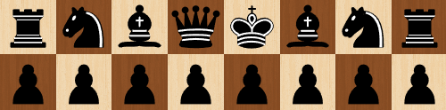
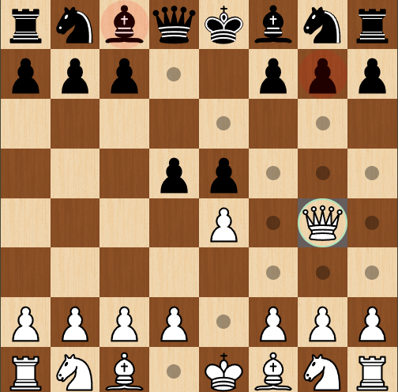
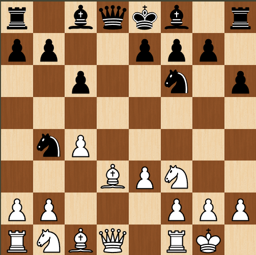

Introdução ao Xadrez
O xadrez é um jogo de estratégia disputado entre dois jogadores em um tabuleiro composto por 64 casas. Não se trata apenas de mover peças aleatoriamente, mas de planejar jogadas, antecipar ações do adversário e construir estratégias ao longo da partida. O objetivo final é alcançar o xeque-mate por meio de raciocínio lógico e tomada de decisões precisas.
O Tabuleiro
O tabuleiro de xadrez é formado por oito colunas, identificadas pelas letras de “a” a “h”, e oito linhas numeradas de 1 a 8. Uma regra fundamental para a correta disposição do tabuleiro é que a casa branca deve sempre estar posicionada no canto inferior direito de cada jogador.

As Peças
Cada jogador inicia a partida com 16 peças: oito peões, duas torres, dois cavalos, dois bispos, uma dama e um rei. Cada peça possui movimentos específicos e funções distintas dentro do jogo, exigindo do jogador a compreensão de suas características para uma utilização estratégica eficiente.
Movimentos Básicos
Os peões avançam verticalmente, os cavalos realizam movimentos em “L”, os bispos deslocam-se pelas diagonais, as torres controlam colunas e linhas, enquanto a dama combina os movimentos da torre e do bispo, sendo a peça com maior mobilidade no jogo.
Objetivo do Jogo
O objetivo do xadrez é aplicar o xeque-mate ao rei adversário. Isso ocorre quando o rei se encontra sob ataque e não existe nenhuma jogada legal que possa evitar a captura. Quando essa situação é alcançada, a partida é encerrada imediatamente.

En Passant
O En Passant é um movimento especial realizado exclusivamente pelos peões e ocorre em uma situação específica. Quando um peão adversário avança duas casas a partir de sua posição inicial e passa ao lado de um peão inimigo, este pode capturá-lo como se ele tivesse avançado apenas uma casa.
Essa captura deve ser executada obrigatoriamente no lance imediatamente seguinte ao avanço do peão adversário. Caso contrário, o direito ao En Passant é perdido. Essa regra existe para impedir que um peão evite o confronto direto ao avançar duas casas de uma só vez.

Roque (Castelar)
O roque é um movimento especial que envolve o rei e uma das torres, tendo como principal objetivo aumentar a segurança do rei e ativar a torre. Trata-se de um dos poucos lances em que duas peças se movimentam simultaneamente.
Existem dois tipos de roque: o roque pequeno, realizado pelo lado do rei, e o roque grande, realizado pelo lado da dama. Nesse lance, o rei move-se duas casas em direção à torre, e a torre é posicionada na casa imediatamente ao lado do rei.
Para que o roque seja permitido, algumas condições devem ser respeitadas:
html Copiar códigoCaso qualquer uma dessas condições não seja atendida, o roque não pode ser realizado de forma legal.
